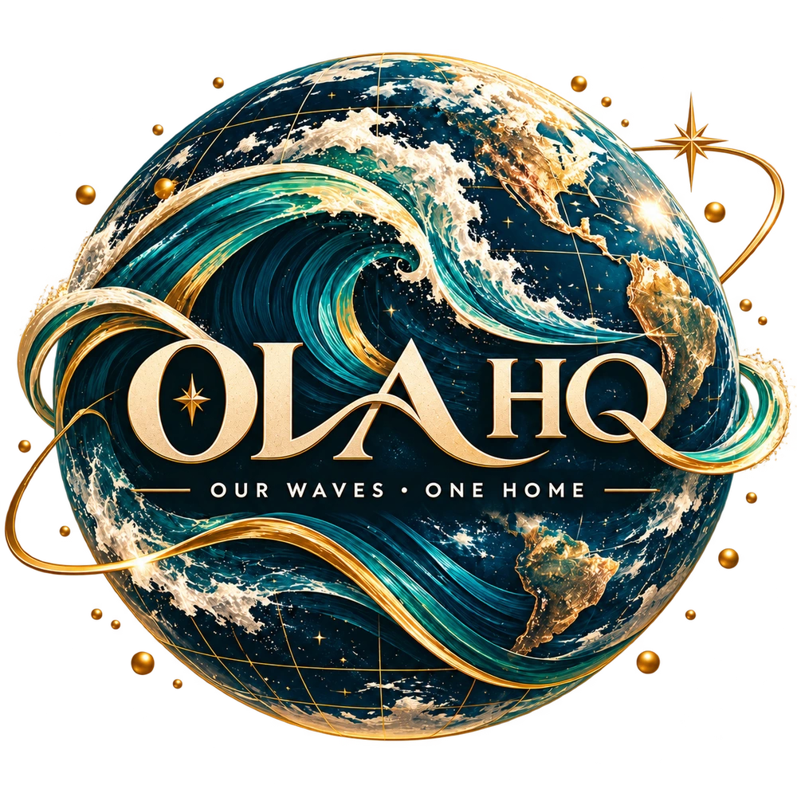
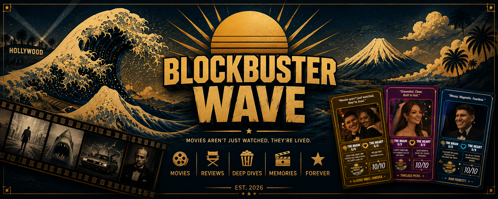
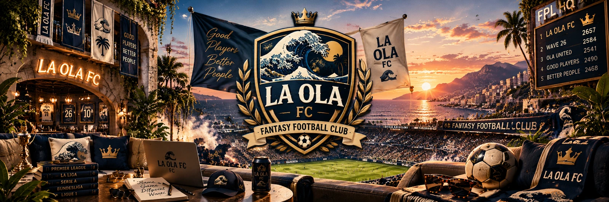
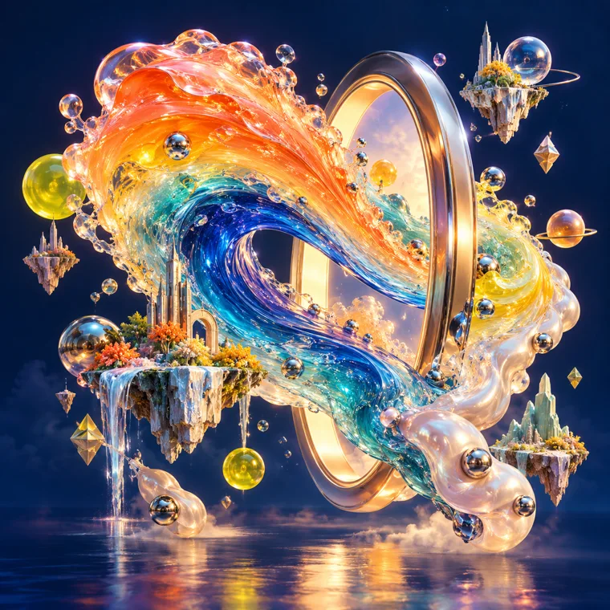

WELCOME TO OUR WORLD
Our Waves,
One Home
A public home for the things we make, the memories we keep, and the worlds they become. Choose a wave and step inside.
Explore OLA HQ
Waves
Six waves. Each its own world.La Ola de Amor
Brianna + Jonathan. A journey through love, places, and the memories along the way.
Enter world ↗
Blockbuster Wave
The film collection: favorites, reviews, artwork, and the stories around what we watch.
Enter the gallery ↗Our Polaroid Wave
Instant film, real moments. Six collections of faces, nights, places, and life in motion.
Explore the portfolio ↗Wave 26
OLA. Albums, songs, and experiments at the intersection of feeling and sound.
Enter the music world ↗
FANTASY FOOTBALL · THE CLUBFPL Wave
The fantasy club. Current season, League HQ, squad, kits, complete publications, and films.
Enter the club ↗
AI ART · IMPOSSIBLE IDEASSimulation Wave
A creative playground of illustrated projects, surreal artwork, and synthetic worlds. Follow an idea somewhere unexpected.
Enter the playground ↗Around the home
A workbench, a museum, and a way back home.OLA HQ App
Our worlds, one home. Explore the universe and add the app to your phone.
Open the app ↗Tools
A small creative workbench: palettes, a focus timer, and reusable prompts.
Open Tools ↗Archive / Version Museum
The story of how our home grew, and the editions that came before.
Visit the museum ↗Publish / Access
How the worlds connect, and where sign-in is needed.
About public access ↗